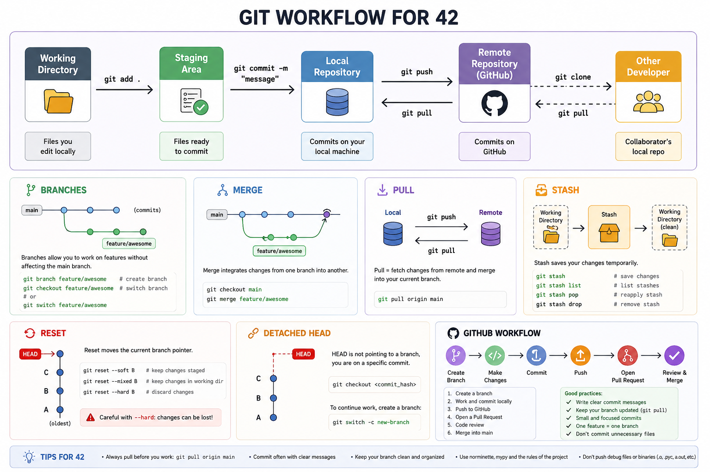

Git Workflow for 42 School¶
A beginner-friendly guide to Git and GitHub workflows commonly used in 42 School projects.
This document explains: - branches - merge - pull - stash - reset - detached HEAD - GitHub workflow - common mistakes
Git is one of the most important tools for software development.

What is Git?¶
Git is a version control system.
It tracks: - code changes - project history - branches - collaboration
Git allows developers to: - work safely - undo mistakes - collaborate efficiently
What is GitHub?¶
GitHub is an online platform that hosts Git repositories.
GitHub allows: - remote backups - collaboration - pull requests - code sharing
Basic Git Workflow¶
Most workflows follow this pattern:
Write code
→ git add
→ git commit
→ git push
Repository¶
A repository (repo) stores: - project files - commit history - branches
Initializing a Repository¶
git init
Creates a local Git repository.
Checking Repository Status¶
git status
One of the most important commands.
Shows: - modified files - staged files - current branch
Adding Files¶
git add file.py
Adds a file to the staging area.
Add Everything¶
git add .
Stages all modified files.
Commit¶
A commit is a saved snapshot of the project.
Creating a Commit¶
git commit -m "Added BFS solver"
Good Commit Messages¶
Good:
Added config parser validation
Bad:
fix
Clear messages improve project history.
Branches¶
Branches allow separate development paths.
Useful for: - new features - experiments - bug fixes
Without affecting the main project.
Viewing Branches¶
git branch
Creating a Branch¶
git branch feature-menu
Switching Branches¶
git checkout feature-menu
Modern Alternative¶
git switch feature-menu
Create + Switch Together¶
git checkout -b feature-menu
or:
git switch -c feature-menu
Why Branches Matter¶
Branches help: - isolate work - avoid breaking main - support teamwork
Very important in 42 group projects.
Merge¶
Merge combines branches together.
Example Workflow¶
main
└── feature-menu
After development:
git checkout main
git merge feature-menu
This brings: - feature-menu changes - into main
Merge Conflicts¶
Conflicts happen when: - two branches modify the same lines
Git cannot decide automatically.
Conflict Example¶
<<<<<<< HEAD
old code
=======
new code
>>>>>>> feature
You must: - edit manually - choose correct code - remove conflict markers
pull¶
git pull downloads updates from GitHub.
Example¶
git pull
Equivalent to:
git fetch
git merge
Why Pull Matters¶
Always pull before: - pushing - merging - starting work
Especially in team projects.
push¶
Uploads local commits to GitHub.
Example¶
git push
First Push of New Branch¶
git push -u origin feature-menu
origin¶
origin usually means:
- the GitHub repository
stash¶
git stash temporarily saves unfinished work.
Very useful when: - changing branches - pulling updates - testing another branch
Example¶
git stash
Restoring Stash¶
git stash pop
Viewing Stashes¶
git stash list
reset¶
git reset moves commits or unstages changes.
Dangerous if used incorrectly.
Unstage Files¶
git reset
Reset to Previous Commit¶
git reset --hard HEAD~1
Removes: - last commit - changes permanently
Be careful.
Soft Reset¶
git reset --soft HEAD~1
Removes commit: - keeps file changes
Safer than --hard.
Detached HEAD¶
A detached HEAD means: - Git is not on a branch - you are viewing a specific commit
Common Cause¶
git checkout abc123
Where:
- abc123 is a commit hash
Why Detached HEAD is Dangerous¶
Commits made here may become lost.
Fix Detached HEAD¶
Return to a branch:
git checkout main
or:
git switch main
Clone Repository¶
Downloads a GitHub repository locally.
Example¶
git clone https://github.com/user/project.git
GitHub Workflow for 42¶
Common workflow:
Step 1¶
Clone project:
git clone REPOSITORY_URL
Step 2¶
Enter project:
cd project
Step 3¶
Create branch:
git checkout -b sara-feature
Step 4¶
Work normally.
Step 5¶
Add files:
git add .
Step 6¶
Commit:
git commit -m "Added MLX rendering"
Step 7¶
Push branch:
git push -u origin sara-feature
Step 8¶
Merge later into main.
Common 42 Problems¶
"Your branch has diverged"¶
Means: - local and remote history differ
Usually fixed with:
git pull
or: - merge/rebase
"nothing to commit"¶
Means: - no modified files exist
Accidentally Working on main¶
Very common mistake.
Fix: - create branch - move work there
Detached HEAD Confusion¶
Students often checkout commits directly.
Always verify current branch:
git branch
Pull Before Push¶
Always:
git pull
git push
Especially in teams.
Useful Commands Summary¶
| Command | Purpose |
|---|---|
| git status | View repository state |
| git add | Stage files |
| git commit | Save snapshot |
| git push | Upload to GitHub |
| git pull | Download updates |
| git branch | View branches |
| git checkout | Switch branches |
| git stash | Temporarily save work |
| git reset | Undo/reset changes |
Recommended .gitignore¶
Do not upload: - virtual environments - cache files - compiled Python files
Example¶
venv/
__pycache__/
*.pyc
Best Practices¶
- Commit frequently
- Use meaningful commit messages
- Pull before pushing
- Avoid working directly on main
- Use branches for features
- Verify branch before committing
- Avoid dangerous reset commands unless necessary
Good Branch Names¶
Good:
feature-menu
mlx-renderer
config-parser
Bad:
test
stuff
aaa
Final Notes¶
Git is an essential skill for modern software development.
Strong Git knowledge helps: - teamwork - debugging - project organization - safer development - version tracking
Git becomes especially important in: - 42 group projects - MLX projects - large codebases - collaborative development
Understanding Git deeply will save countless hours during development.